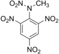

Definition: 2,4,6-Trinitrophenylmethylnitramine commonly referred to as tetryl (C7H5N5O8) is an explosive compound used to make detonators and explosive booster charges.
Source: Wikipedia
Wikipedia Page
Wikidata Page